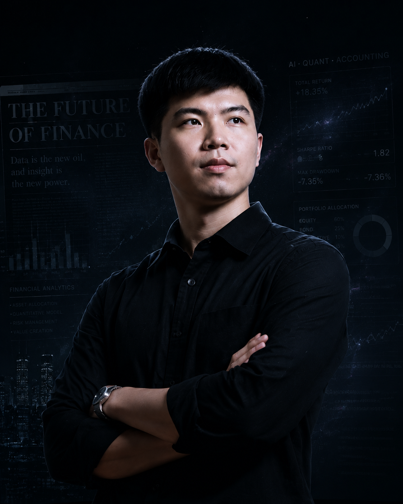

DATA STREAM
VALUE
28.6
ALPHA
19.7
BETA
7.3
SHARPE
1.82
MARKET OVERVIEW · UPDATED 16:58
WEI KAI
用数据洞察未来
用智能创造价值
用智能创造价值
魏凯 | Earth Online SSS玩家终端
以会计为基，精算为骨，AI为翼
01
AI赋能金融分析
运用AI与数据分析技术，挖掘数据价值，洞察金融本质。
02
量化驱动价值创造
以量化模型与策略为核心，实现风险调整后的持续增值。
03
会计 | 精算 | Python | AI金融
复合知识结构驱动跨领域融合，构建系统化金融解决方案。
04
长期主义复合型金融探索者
持续学习与深度思考，追求长期价值与社会影响力。
快速导航 / QUICK ACCESS
档案
学业
项目
资质
知识
观察
副官
"最好的未来，是用数据与智慧创造出来的。"